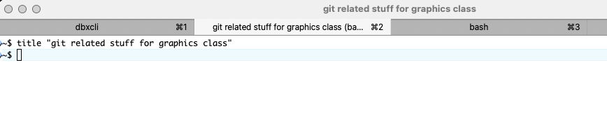
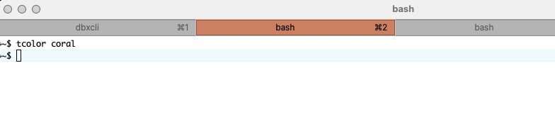
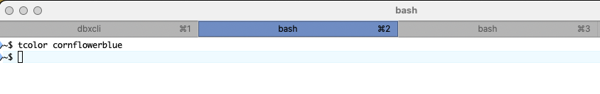
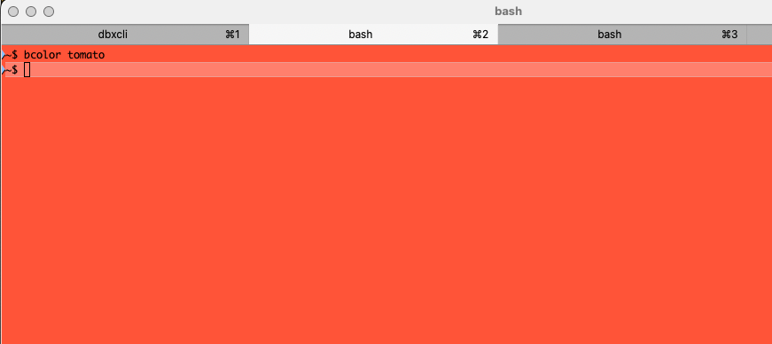
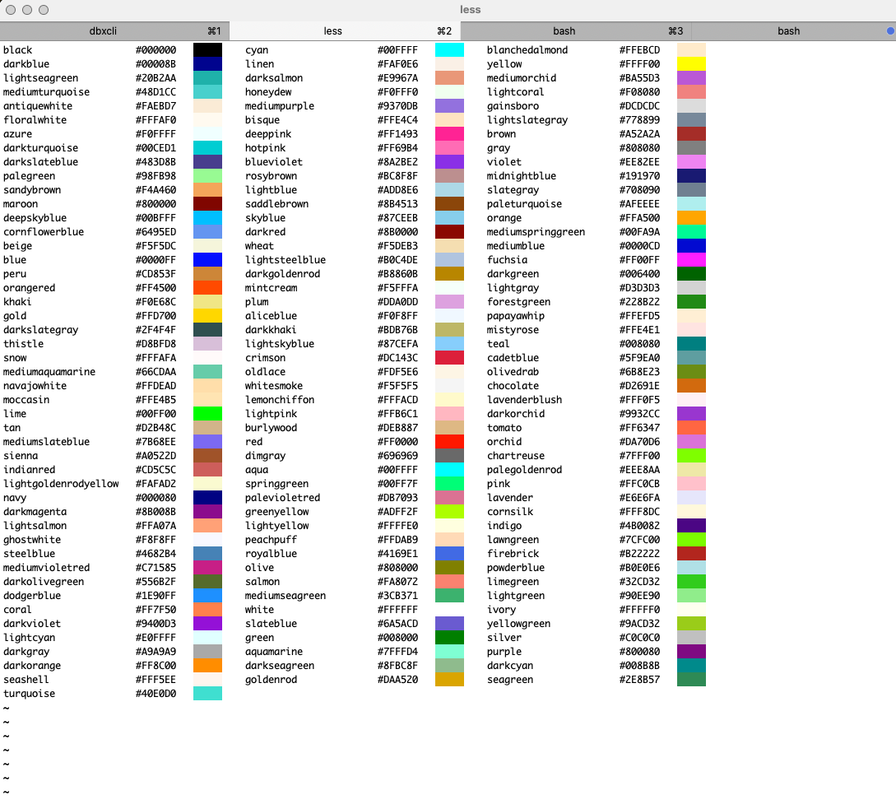
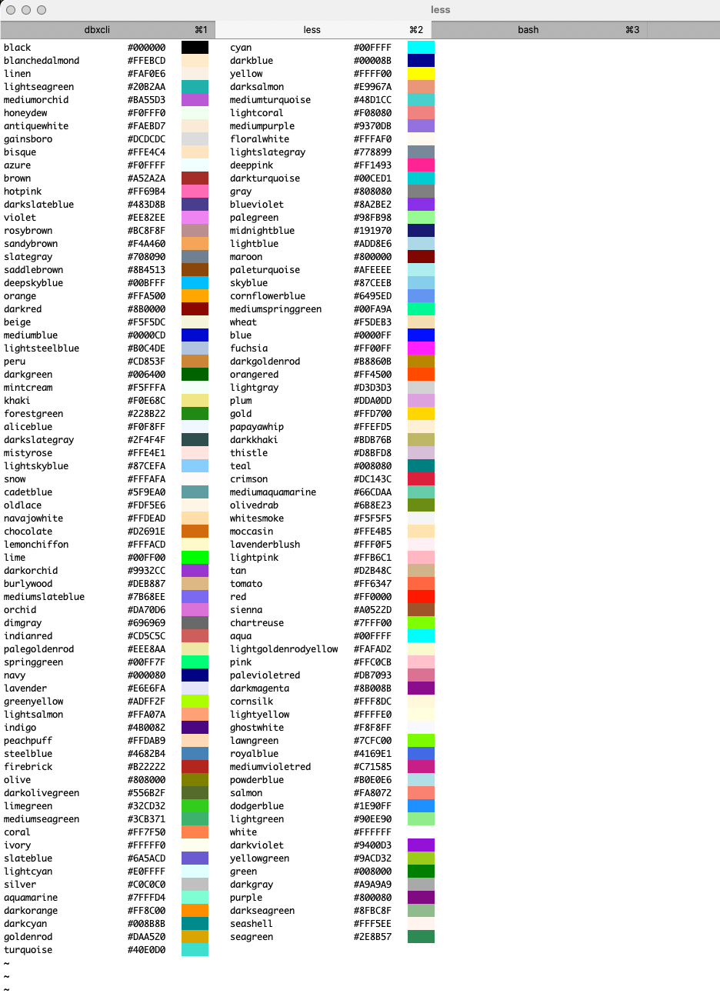
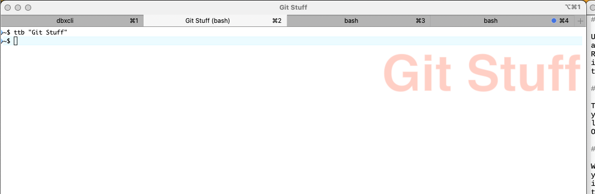

1. iterm.bash
- Download the files iterm.bash.
Create
$HOME/.bash(aka\tilde/.bash) directory:$ mkdir ~/.bash
Move file into that directory:
$ mv ~/Downloads/iterm.bash ~/.bash/ # You could also type this as the following command $ # OR $ mv ~/Downloads/iterm.bash ~/.bash/iterm.bash
mvhas two primary forms:mv «src-path» «dest-path»Which you use to move and rename a file like:mv ~/Downloads/iterm.txt ~/.bash/iterm.bash
If you accidentally saved it as
iterm.txt, but want it to be namediterm.bash, you'd do this.mv «src-path_0» «src-path_1» «... src-path_n» «dest-dir»The last parameter tomvhas to be a directory if you're moving more than one file or if you want to move the file, but keep the name the same.mv ~/Downloads/*.bash ~/.bash
This moves all the files in
\tilde/Downloads/that end in.bashinto the directory named\tilde/.bash, so if you had files in\tilde/Downloadsnamedaws.bash,java.bash, anditerm.bash, it would move all of them so that their new names would be\tilde/Downloads/aws.bash,\tilde/Downloads/java.bash, and\tilde/Downloads/iterm.bash.
Add a line like this to the end of your
.bashrcfile. (Thercmeans "run commands".)source ~/.bash/iterm.bashwhich you can do by typing this command:
$ echo 'source ~/.bash/iterm.bash' >> ~/.bashrc
- The
.bashrcfile is run every time you start a new instance of Bash (when you start a new terminal window or tab.) - The command
source \tilde/.bash/iterm.bashis an intstruction that tells Bash to read and execute the commands in the file\tilde/.bash/iterm.bash. - The
echocommand is a Bash "built-in" command that just prints out its arguments. So if you just typed it like this
$ echo 'source ~/.bash/iterm.bash' source ~/.bash/iterm.bash
it would just print out
source \tilde/.bash/iterm.bash.- The magic is the
>>which means to take the output of the command you're typing (theechocommand) and instead of displaying it, append it to the end of the named file (your.bashrcfile).
- The
1.1. What's in that iterm.bash?
- Just some Bash functions I wrote. Bash functions act like Bash built-in commandsm except they are user-defined.
1.1.1. title
Sets the title of the iterm tab so you can easily find the one you want if you have more than one. (I always do.)
$ title "git related stuff for graphics class"

To remove the title, just call the command with no arguments:
$ title
1.1.2. tcolor
Set the color of the tab (just the tab part at the top, not the whole window)
$ tcolor coral

You can use completion to fill in the color names. If you type
$ tcolor co<TAB>
it will become
$ tcolor cor
because all the colors that start with
"co"also start with"cor". If you press\lt{}TAB\gtagain twice, it will show the possible completions, then re-display the command you're typing.:$ tcolor cor<TAB><TAB> coral cornflowerblue cornsilk ~$ tcolor cor
which tells you the possible colors starting with
"cor"arecoral,cornflowerblue, andcornsilk. So, if you add"nf"after that"cor"then press\lt{}TAB\gtit will complete it:$ tcolor cornfl<TAB> # becomes… $ tcolor cornflowerblue
so you can just press <RETURN> to enter the command. 
To reset the color to the default:
$ tcolor -r
1.1.3. bcolor
Sets the background color of the entire tab.
$ bcolor tomato

To reset to the default:
$ bcolor -r
1.1.4. html_colors
Shows a list of named colors, their associated hex values, and a sample swatch:
$ html_colors

You can change the number of columns with the
-c flag$ html_colors -c 2

1.1.5. ttb
Set the tab title and "badge"—a translucent label that appears in the background of the tab window itself.
$ ttb "Git Stuff"

- So, that string "Git Stuff" appears in the tab title, but also in that
red translucent text inside the window so you don't accidentally
type your
gitcommands in the wrong window.
- So, that string "Git Stuff" appears in the tab title, but also in that
red translucent text inside the window so you don't accidentally
type your
You can remove it with
$ ttb -r